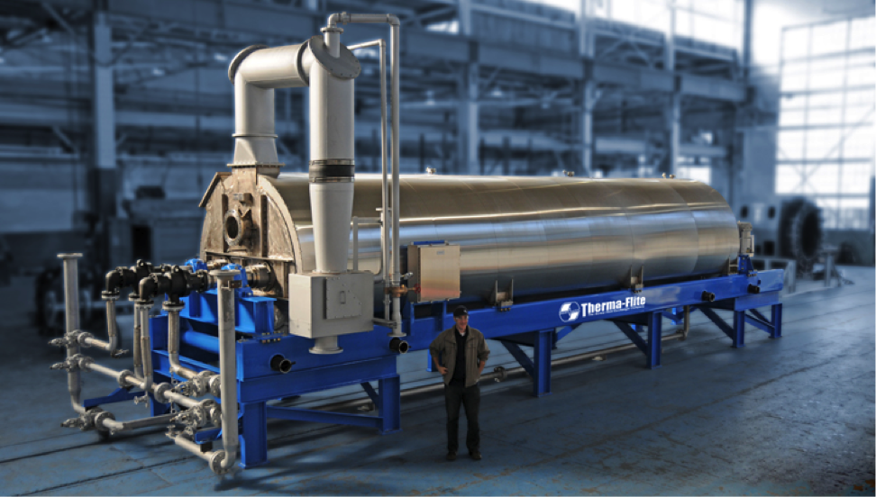
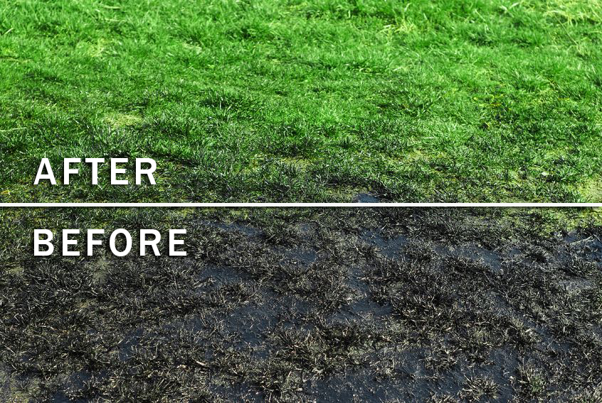
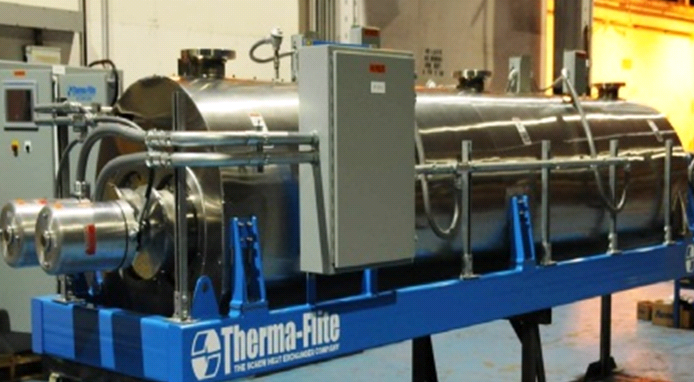

There are many technologies available for treatment of oil contaminated soils. The
decision about choosing the specific method and equipment is made with consideration
for site characteristic, soil condition, type and amount of contaminant, age of
contamination, regulatory requirements, cost, time and others.
The current technologies may be placed in the group of ex-situ or in-situ process and
further classified as physical, chemical and biological processes.
Physical/Chemical processes include Thermal Desorption, Incineration, Soil Washing,
Chemical Treatment, Chemical Extraction, Volatilization, Steam Extraction,
Solidification/Stabilization, Encapsulation, and a few other less common methods.
Biological processes may be ex-situ or in-situ and include Bioremediation/Bioreclamation,
Bioventing, Bioslurping, Bioinjection and few others.
Soil excavation with subsequent thermal desorption is one of the most efficient methods for
treatment of heavy petroleum contaminated soils. Contaminated soil is heated away from air
so that organic contaminants are converted from solid to gaseous phase. It promotes separation
of the petroleum contaminants from treated soil.
Hamrock-Strata® Environmental Servcies Ltd in cooperation with our partners supplies and installs
the most advanced thermal desorption units available on the market, and organizes training
of your personnel.

Bioremediation has been defined as “a process, in which microbial catalysis acts on pollutant compounds, thereby remedying or eliminating environment contamination”. Though microorganisms capable to convert hydrocarbons into non-harmful biomass exist in soil, natural breakdown of the contaminating hydrocarbons occurs very slowly and usually to no acceptable levels. Making use of state of the art technology and knowhow, INKAS® Environment Protection offers a unique biological process, material and equipment for complete removal oil from soil. It is all natural and annually renewable 100% biodegradable cellulose material, with no adverse effect on plants or animals, provides complete decomposition of hydrocarbons within thirty to sixty days, cost effective solution, which may be used in both

Our Indirect heat thermal desorption system uses indirect thermal desorption to recover and recycle hydrocarbon contaminated solids for safe on-site disposal. This is a portable system designed to thermally remove hydrocarbons from solids. Using the latest in resistive element technology to heat the rotors and housing, the Electric-Scru processor can be zoned to accommodate the process temperatures and heat transfer rates required by the process. Typical units are two zone, but up to four zones can be incorporated into the design of larger units. Each zone can be programmed to generate process temperatures of over 1200°F. Utilizing the zoning technology the feedstock is exposed to different rotor and housing surface temperatures as it is conveyed through the unit.